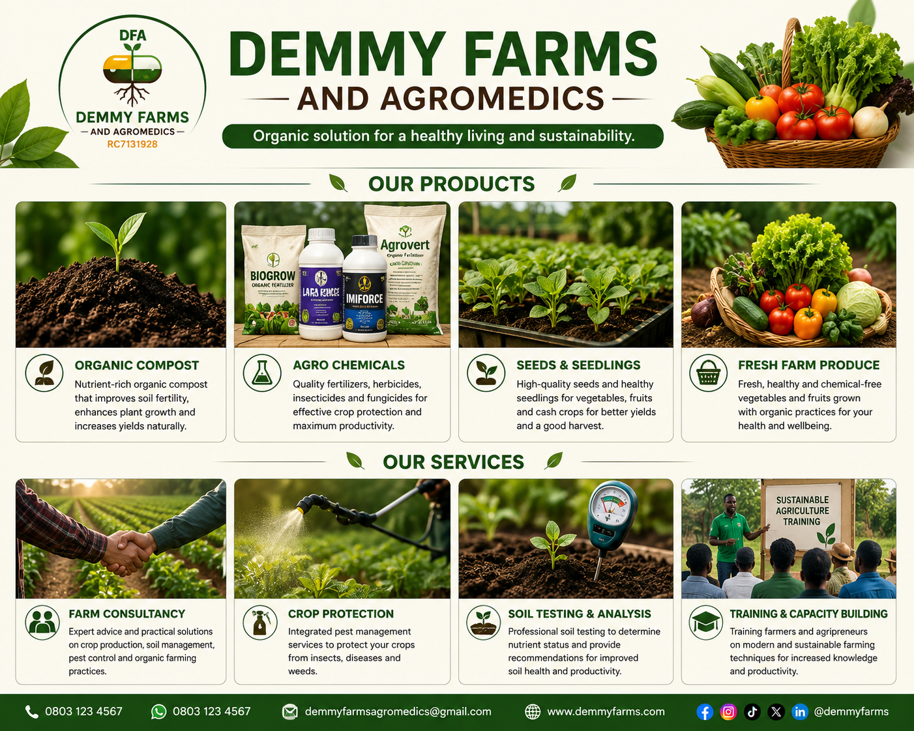

Our Products

alt="DEMMY FARMS AND AGROMEDICS Products and Services" style="width:100%; max-width:1000px; display:block; margin:20px auto; border-radius:12px;">Welcome to our products page. We offer quality agricultural products and organic solutions for healthy living and sustainability.
Available Products
Our Products & Services
Organic Compost
Premium organic compost for healthier soil and improved crop growth.
Agro Chemicals
Quality herbicides, insecticides, fungicides, and fertilizers for effective crop management.
Seeds & Seedlings
High-quality seeds and healthy seedlings for better yields.
Farm Consultancy
Professional guidance on organic farming, crop production, and sustainable agriculture.
More products will be added soon.